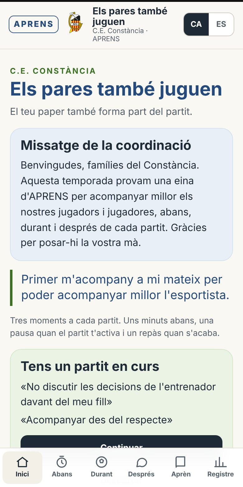
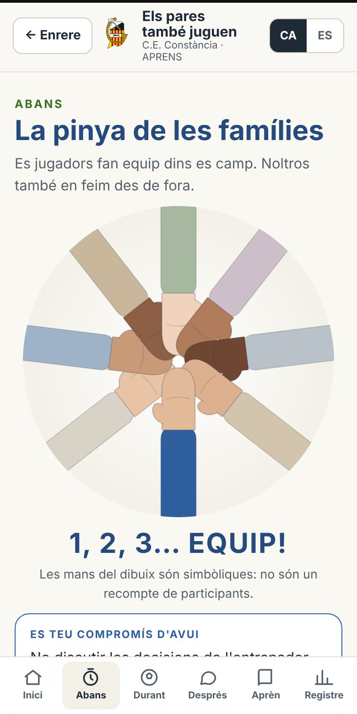
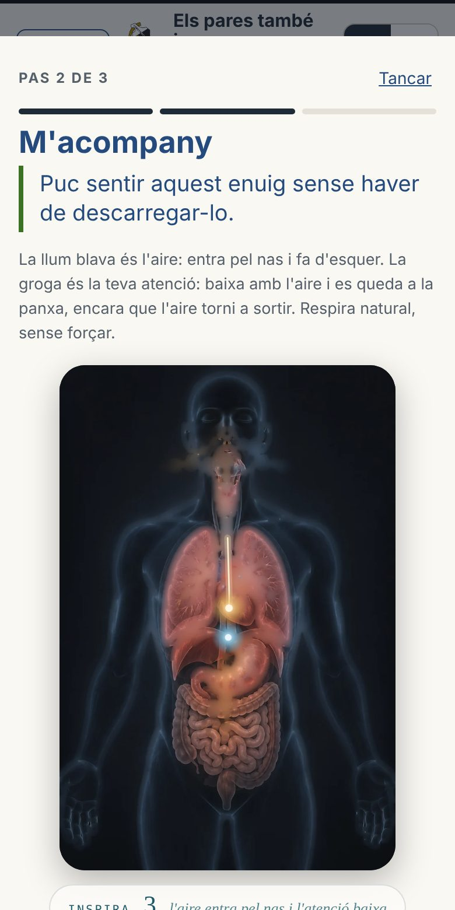
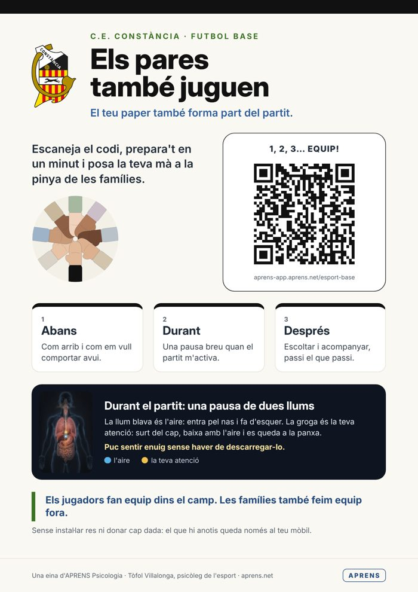

Atenció, maneig emocional i acompanyament de famílies, entrenadors i jugadors. Un marc de treball per a tota la temporada, amb fitxes pràctiques i l'app «Els pares també juguen».
La salut esportiva no és incompatible amb el rendiment. N'és la base.
Tòfol VillalongaPsicòleg General Sanitari (B-01599) · Psicologia de l'esportAPRENS Psicologia · C/ Mare de Déu de l'Esperança, 70, 2n · Incaaprens.net · 636 93 76 61 · info@aprens.es
Contingut
Què hi trobareu
Per què aquesta guia
La idea central: salut i rendiment van junts
El marc de treball: materials, model i app
La piràmide del rendiment
Atenció i maneig emocional al joc
La regulació dels adults: percebre, acompanyar, elegir, actuar
Mòdul famílies
Mòdul entrenadors
Mòdul jugadors i jugadores
Mòdul club
L'app «Els pares també juguen»
Pla de temporada i guions de sessió
Pilotatge i avaluació
Fitxes per fotocopiar
Recursos i contacte
Com fer servir aquesta guia. Està pensada per a coordinadors esportius, entrenadors i psicòlegs que acompanyen un club. Es pot llegir sencera o per mòduls. Les fitxes del final es poden fotocopiar, i l'app permet que famílies i entrenadors entrenin el mateix des del mòbil, abans, durant i després de cada partit.
1 · Per començar
Per què aquesta guia
Fa anys que faig feina amb esportistes joves, amb les seves famílies i amb els seus entrenadors, i per mi l'esport de base és un dels contextos on més es pot ajudar un al·lot a créixer, a nivell físic, emocional i com a persona. També és un dels contextos on més fàcilment li podem afegir pressió sense voler.
Aquesta guia recull i ordena tres materials d'APRENS que hem treballat amb famílies i clubs: «Els pares també juguen. El paper dels pares dins l'esport de base», «La piràmide del rendiment» i «Atenció i maneig emocional a l'esport». Els uneix una idea que cada temporada veig confirmada als camps: quan cuidam la salut esportiva de l'esportista, el seu rendiment no se'n ressent; al contrari, té on recolzar-se.
Els tres materials parlen del mateix des de llocs diferents. El primer, des dels adults que envolten el jugador. El segon, des de la motivació i l'orientació cap a la tasca. El tercer, des de l'atenció i el maneig de les emocions dins el joc. I tots tres desemboquen en una pràctica concreta: aprendre a adonar-se d'on és l'atenció, estar amb el que el cos sent sense lluitar-hi, i tornar al que és rellevant.
Primer m'acompany a mi mateix per poder acompanyar millor l'esportista.
No es tracta de formar adults que no s'enfaden mai ni jugadors que no es posen mai nerviosos. Es tracta que cadascú, des del seu paper, aprengui a reconèixer el que sent, a acompanyar-ho i a elegir com actua, de manera que el nin o la nina no hagi de gestionar les emocions dels adults i pugui fer allò per al qual és al camp: jugar, aprendre i gaudir.
A qui va dirigida
Coordinació i direcció del club: per definir el clima educatiu i el pla de la temporada.
Entrenadors i entrenadores: per entrenar l'atenció del jugador, comunicar-se de manera educativa i regular-se a la banqueta.
Famílies: per acompanyar sense pressionar, abans, durant i després dels partits.
Psicòlegs i professionals que acompanyen el club: com a guió de treball.
2 · La idea central
Salut i rendiment van junts
Sovint es parla de benestar i de rendiment com si fossin dues forces oposades: o cuidam l'al·lot o cercam resultats. El que observam, i el que recull la psicologia de l'esport, és que les mateixes habilitats que protegeixen la salut de l'esportista són les que sostenen el rendiment a mitjà i llarg termini.
Clau
Què aporta a la salut
Què aporta al rendiment
Atenció
Menys rumiació, més presència en el que fa; menys angoixa davant l'errada.
Més estímuls rellevants a l'abast, decisions més ràpides i més ajustades a la jugada.
Regulació emocional
Pot sentir nervis o enuig sense que el desbordin.
Menys bloqueig després d'una errada; torna abans a la jugada.
Orientació a la mestria
L'èxit és aprendre: el valor personal no depèn del marcador.
Més adherència i més autoeficàcia: entrena més anys i amb més qualitat.
Clima adult serè
Se sent estimat jugui com jugui; l'esport no és una càrrega.
Menys distractors des de la grada i la banqueta; més confiança per arriscar i provar.
Mirada a llarg termini
Respecta les etapes i el ritme de cadascú.
No tanca els camins que duen al rendiment adult.
La nostra tesi. Cuidar la salut esportiva no és un luxe que es pugui permetre només qui no competeix. És una condició perquè el talent es pugui desenvolupar i perquè l'esportista vulgui continuar fent esport d'aquí a cinc i deu anys.
Doble objectiu, un mateix entrenament
A la pràctica, això vol dir que no cal afegir «sessions de benestar» a part de l'esport. Ho entrenam dins l'esport: als exercicis, a la manera de corregir, a com rebem el jugador després del partit i a com ens comportam a la grada. Tota aquesta guia segueix aquest criteri.
3 · Marc de treball
Materials, model i app
Els pares també juguen
El paper dels pares dins l'esport de base: què aporta l'esport, la pressió que hi afegim, els mals moments, els partits, com acompanyar.
La piràmide del rendiment
Orientació a la mestria i a l'ego: com l'atenció i la regulació emocional sostenen la motivació, l'adherència i l'autoeficàcia.
Atenció i maneig emocional
Dos focus d'atenció, de la situació a la conducta, les creences que distreuen i com entrenar el «tornar».
El model: TEC i AIS
A APRENS treballam amb la Teoria de l'Efecte Conscient (TEC) i l'Atenció Interna Sensorial (AIS). La TEC és per mi una manera de donar un llenguatge comú a moltes orientacions psicològiques que, per camins diferents, es troben en un mateix punt: ser capaços, com a consciència, de fer-nos visibles i fiables per al nostre organisme, i per tant baixar activació i alerta. L'AIS n'és la pràctica: aprendre a adonar-se d'on és l'atenció, a estar amb el que el cos sent sense lluitar-hi, i a tornar.
Aquest treball s'integra amb coneixements consolidats de la psicologia: l'atenció selectiva i limitada, la regulació emocional, i els principis de les teràpies d'acceptació i compromís (acceptar el que sentim, distanciar-nos dels pensaments, contactar amb el present i actuar d'acord amb els valors).
Honestedat amb el que oferim. Distingim el que és coneixement consolidat del que són hipòtesis pròpies del model TEC/AIS, que seguim avaluant. Ni aquesta guia ni l'app són un tractament psicològic, ni prometen resultats clínics ni mecanismes fisiològics concrets. Són recursos educatius i d'entrenament. Si un esportista o un adult necessita ajuda individual, cal derivar-lo a un professional.
Quatre agents, un mateix equip
Treballam amb els quatre agents que envolten el jugador: famílies, entrenadors, el mateix jugador i el club. Cada mòdul d'aquesta guia en tracta un, però tots comparteixen el mateix llenguatge: percebre, acompanyar, elegir, actuar, i la mateixa pràctica de tornar.
4 · Motivació
La piràmide del rendiment
Es llegeix de baix cap amunt: on posam l'atenció durant la competició acaba marcant el control que percebem, com regulam l'errada, la motivació, l'adherència i, al final, el rendiment.
RENDIMENT
Percepció d'autoeficàcia
Adherència a l'esport
aprenentatge
Motivacióintrínseca · extrínseca
resultats
percepció de millora
Regulació emocionaldavant l'errada i la derrota
obtenir bons resultats
aprenentatge i repte
Percepció de control+ · −
por i percepció de fracàs
estímuls d'aprenentatge
Atenció
estímuls de resultats
enfocada als processos d'aprenentatge
On s'enfoca el meu cosdurant la competició?
enfocada als resultats
Orientació a la mestria
Per percebre èxit, he d'aprendre contínuament.
L'èxit com a camí: aprendre és el meu èxit. Em compar amb mi mateix.
Orientació a l'ego
Per percebre èxit, he d'obtenir bons resultats.
L'èxit com a destí: guanyar, guanyar i guanyar. Em compar amb els altres.
Els resultats poden generar molta motivació. Però si no orientam l'esportista cap a la tasca, l'adherència, l'aprenentatge continu i la capacitat de regular la pròpia motivació es poden esvair, i amb elles l'esforç i la il·lusió per l'esport. Orientar-se a la mestria és com una vacuna: protegeix la motivació quan els resultats no acompanyen, que és precisament quan més es necessita.
Què en podem fer els adults
Orientació a l'ego
Orientació a la mestria
«Heu guanyat?» «Quants gols has fet?»
«Què has après avui?» «Què t'ha sortit millor que l'altra vegada?»
Comparar-lo amb els companys o amb el rival.
Comparar-lo amb ell mateix: com jugava fa uns mesos i com juga ara.
Objectius només de resultat: «hem de guanyar».
Objectius de procés: «avui, sortir jugant des de darrere».
L'esportista i l'entrenador ho han d'entrenar. El psicòleg assessora per detectar-ho i aprendre-ho.
5 · Atenció
Atenció i maneig emocional al joc
Dos focus
Joc en marxa
Atenció externa
Tot el que es percep sobretot amb la vista i l'oïda.
Un mà a mà amb el porter, un regat, un desmarcatge, un marcatge.
Les indicacions de l'entrenador amb la pilota en joc.
Després d'una errada tècnica, abans de xutar un penal.
Les correccions de l'entrenador després d'un encert o d'una errada.
Tots dos focus són normals i, sovint, es donen dins la mateixa jugada. A vegades volem estar pendents del que és rellevant, i el cos decideix atendre altres estímuls que ens distreuen: un pensament, una emoció, el soroll de la grada.
De la situació de joc a la conducta
Situació de jocel que passa al camp
El coshàbits apresos + creences sobre la situació
Focus atencionalestímuls rellevants o distractors
Conductala decisió i l'acció
L'atenció és limitada, i no és el jugador qui decideix l'estímul que atén: ho fa el seu cos, segons els hàbits que ha après als entrenaments i segons les creences sobre la situació: com d'important és, si se sent competent i què passarà si encerta o si falla.
És important?
«Ens jugam punts vitals», «hi ha en joc els objectius de la temporada»…
Som competent?
«Sé resoldre un cara a cara?», «sé xutar aquesta falta?»…
I si m'equivoc?
«Puc perdre la titularitat», «perdré la confiança de l'entrenador»…
Aquí és on els adults hi tenim molt a veure. Molts de comentaris de la grada i de la banqueta alimenten aquestes creences («avui és molt important», «ho has de fer bé», «si falles…»): sense voler, afegim distractors interns. I les instruccions des de la grada són distractors externs que competeixen amb els de l'entrenador.
El jugador com a observador
Durant una jugada, el jugador és en bona part un espectador del seu cos: l'atenció no és del tot voluntària. Com més vol intervenir per corregir errades, pensaments o emocions enmig del joc, més distractors hi afegeix.
No lluitar, tornar
El cos viu la situació de joc i tindrà pensaments, emocions i reaccions fisiològiques. No podem lluitar contra això.
Sí que podem tornar a atendre els estímuls rellevants, amb l'ajuda de les indicacions de l'entrenador.
I podem entrenar-nos per adonar-nos que ens hem distret i tornar a la jugada.
La clau no és no distreure's mai, sinó adonar-se'n abans i tornar més aviat.
Exercicis formals
Dur voluntàriament l'atenció a un estímul concret i mantenir-la-hi: la respiració, el tacte de la pilota amb les mans, la tensió i la distensió d'un múscul. Apareixeran distraccions; adonar-se'n i tornar és l'entrenament.
Exercicis informals
Dins el joc i els entrenaments, utilitzar els estímuls que ha indicat l'entrenador. I quan el jugador s'adoni que s'ha distret, recórrer a una paraula clau o a un gest (pujar-se les calces, un estirament concret).
«Reset!»«A sa pròxima!»«Pilota!»«Ara!»
6 · Regulació dels adults
Percebre, acompanyar, elegir, actuar
Les emocions d'un partit també ens alteren als adults. Davant un error del fill, una decisió arbitral discutible o un canvi inesperat, el cos reacciona de manera automàtica. El que importa és què fem amb aquesta activació. Volem entrenar la diferència entre:
Sentir…
…i descarregar-ho
…i acompanyar-ho
Enuig
Cridar, protestar, increpar.
Notar-lo al cos i no descarregar-lo sobre ningú.
Preocupació
Transmetre pressió.
Oferir seguretat.
Frustració
Criticar.
Actuar des del respecte.
1 · Percebreel meu cos està reaccionant
2 · Acompanyaratenció i respiració, sense lluitar
3 · Elegirquè faria la persona que vull ser?
4 · Actuaruna conducta coherent amb el meu compromís
La respiració de dues llums
És la pràctica central de l'AIS que fem servir a l'app. La llum blava és l'aire: entra pel nas i baixa fins a la panxa; fa d'esquer. La llum groga és la teva atenció: surt del cap, segueix l'aire i es queda ancorada a la panxa, encara que l'aire torni a pujar i sortir.
No cal tancar els ulls: es pot fer a la grada o a la banqueta amb els ulls oberts. Si atendre el cos resulta incòmode, l'alternativa és orientar-se cap a fora: mirar tres coses al voltant, sentir els peus a terra, escoltar dos sons.
Els colors són una representació pedagògica, no una mesura de cap estat fisiològic.
Reparar també és educar
Tots podem perdre les formes. Això no ens defineix com a pare, mare o entrenador. El que educa és el que fem després:
Reconèixer què ha passat, sense justificar-ho.
Assumir la responsabilitat i demanar disculpes a qui correspongui.
Explicar què farem diferent la pròxima vegada.
Triar un compromís concret per al pròxim partit i preparar-lo abans d'entrar.
Seguretat abans que regulació. Si hi ha violència, assetjament o risc per a un menor, primer la protecció: avisar l'àrbitre, l'entrenador o el delegat i seguir el protocol del club. La pausa pot esperar.
7 · Mòdul famílies
Els pares també juguen
Dotze principis
L'esport és un espai de desenvolupament físic, psicològic i social.
El jugador ha de sentir-se estimat sigui quin sigui el resultat.
Acompanyam sense afegir pressió.
L'entrenador té la responsabilitat de la formació esportiva.
Els errors i les derrotes formen part de l'aprenentatge.
Evitam les comparacions entre jugadors.
Respectam àrbitres, rivals, entrenadors i famílies.
L'esforç, la perseverança, la cooperació i l'actitud importen més que el resultat d'avui.
Escoltam sense envair ni resoldre-li els problemes.
El comportament de la grada també és la imatge del club.
Els adults ens preparam per manejar el nerviosisme, l'enuig i l'eufòria.
Miram a llarg termini i respectam les etapes.
La pressió que hi afegim sense voler
Tipus de missatge
Exemple
Expectatives sobre el rendiment
«Estic segur que ho faràs bé», «tenc confiança en tu».
Crítiques i menyspreu
«T'has d'esforçar més», «avui has jugat bé per casualitat».
Preocupació i amenaces
«Si segueixes així no et convocaran», «si no jugues millor, et trec de l'equip».
Culpa
«Amb l'esforç que faig perquè juguis, i tu no em dones cap alegria».
Abans del partit
Com arrib i què em pot activar avui.
Un o dos compromisos concrets.
Un minut de respiració de dues llums.
«Gaudeix-ho.» «Jugui com jugui, t'estim igual.»
Durant el partit
Animar l'equip, no dirigir-lo.
Respectar l'àrbitre encara que no hi estiguem d'acord.
Si m'altero, pausa abans de dir res.
Si altres pares perden les formes, no posar-s'hi a l'altura.
Després del partit
Acostar-se com qualsevol altre dia i triar el moment. Felicitar l'esforç i el comportament, sigui quin sigui el resultat; corregir és feina de l'entrenador. Si vol parlar, escoltar; si vol estar tot sol, respectar-ho. Moltes vegades és més útil escoltar i acompanyar que analitzar de seguida tots els errors.
«M'ha agradat veure't gaudir.» «Si vols xerrar de com t'has sentit, jo t'escolt.» «Vols que en parlem o prefereixes descansar?» «El resultat no canvia el que sent per tu.»
La pinya de les famílies
Igual que els jugadors fan pinya abans del partit, les famílies poden fer-ne des de fora. Després de preparar el seu paper, cada adult pot «posar la mà» enviant el seu compromís al grup de l'equip o responent l'enquesta que prepara el delegat. És un gest voluntari d'intenció educativa: no garanteix una conducta perfecta, no serveix per controlar ningú i no substitueix les normes de convivència ni el protocol de protecció del club.
Avui no venc només a veure jugar el meu fill. Venc a formar part d'un equip que acompanya tots els jugadors.
8 · Mòdul entrenadors
L'entrenador, figura educativa
L'entrenador no només regula les seves emocions: és la figura adulta que pot fer de l'equip un entorn d'aprenentatge segur i respectuós. Aquest mòdul amplia els materials originals des dels mateixos principis.
Entrenar l'atenció externa: en què i quan
En què s'ha de fixar?
La pilota, el company, el contrari, la posició del jugador, cap on mira, el peu…
Quan s'hi ha de fixar?
En quin moment de la jugada ha d'atendre cada estímul per fer l'acció a temps.
Repetir les situacions de joc ensenya el cos a detectar els estímuls rellevants i a prendre bones decisions, també quan hi ha pressió. Per això cada exercici hauria de tenir un estímul rellevant i un moment explícits, i l'entrenador els hauria de dir en veu alta.
Corregir no és humiliar
En lloc de…
Prova…
«Sempre fas el mateix. No aprens.»
«Revisem què pots fer diferent la pròxima vegada.»
«Si segueixes així, no jugaràs.»
«Necessit que tornis a la teva posició quan perdem la pilota. Ho treballarem dimarts.»
«Quina vergonya de partit.»
«Avui no ens ha sortit. Pensem una cosa que hem fet bé i una per millorar.»
«Ets un desastre defensant.»
«En defensa, fixa't en l'home, no en la pilota.»
La correcció tècnica és legítima i necessària: parla de l'acció, és concreta i mira cap al futur. La humiliació o la descàrrega emocional parla de la persona, és general («sempre», «mai»), es fa en públic i mira cap a l'enuig de l'adult. Pregunta útil: el que diré l'ajuda a aprendre, o m'ajuda a mi a descarregar?
Situacions de banqueta
Situació
Clau i resposta
Errors continuats
Una sola indicació observable; reconèixer l'intent abans de corregir; treballar-ho a l'entrenament.
Bloqueig per por a fallar
Permís explícit per equivocar-se; objectius de conducta (intentar, oferir-se), no de resultat.
Protesta en ser substituït
Deixar passar el moment calent; validar el que sent i posar límit a la forma, en privat.
Derrotes repetides
Objectius de procés i fer visible la millora encara que el marcador no ho mostri.
Famílies que qüestionen decisions
No discutir just després del partit; oferir una cita i explicar criteris de grup i de temporada.
Faltes de respecte
Aturar, nomenar la norma de l'equip i aplicar la conseqüència pactada, amb calma.
Abans i després de cada sessió. Una intenció educativa en una frase (per exemple, «corregir una sola cosa cada vegada») i, en acabar, un repàs de dos minuts: què ha anat bé, quina reacció vull reparar, què vull seguir entrenant. L'app ho guia.
9 · Mòdul jugadors i jugadores
Jugar, aprendre i tornar
Dels més petits a infantils
Encara no és l'edat del rendiment.
El prioritari és que es diverteixin i juguin sense por a equivocar-se.
Atenció: jocs breus de «tornar» (sentir la pilota a les mans, escoltar l'entrenador, respirar tres vegades).
Paraula clau compartida per tot l'equip.
Cadets i juvenils
A poc a poc, assumeixen responsabilitat sobre el seu rendiment.
Les situacions difícils són ocasions per enfortir-se.
Atenció: identificar les seves creences distractores i triar paraula i gest personals.
Necessiten un suport molt especial dels adults.
La meva tornada
Cada jugador tria una paraula clau i un gest, i els entrena als entrenaments perquè el dia del partit surtin sols. L'entrenador pot dedicar-hi cinc minuts a l'inici d'una sessió i recordar-ho en els moments de joc aturat.
Microsessió de 10 minuts (dins l'entrenament)
2 min · Respirar: tres respiracions notant l'aire que entra pel nas i l'atenció que baixa fins a la panxa.
3 min · Exercici formal: atenció al tacte de la pilota amb les mans; quan apareix una distracció, adonar-se'n i tornar.
3 min · Exercici informal: un rondo amb un estímul rellevant explícit; quan l'entrenador diu la paraula clau, tothom torna a l'estímul.
2 min · Tancament: «Quan t'has adonat que t'havies distret? Què t'ha ajudat a tornar?».
Salut i rendiment, junts. Un jugador que torna abans després d'una errada no només ho passa menys malament: torna a estar disponible per a la jugada següent.
L'esport i els estudis
Estudiar també forma part de l'entrenament. Planificar el temps des del primer dia, dosificar pantalles i sortides i mostrar interès pels estudis forma part de ser esportista. Estudiar i fer esport és la millor combinació per estar preparat per a la vida, arribi o no a ser professional.
10 · Mòdul club
Som un equip també fora del camp
El club és el que fa que tot això no depengui de la bona voluntat d'una família o d'un entrenador. Defineix el clima educatiu, posa normes clares i cuida els canals.
Les famílies
Animam sense donar instruccions.
Respectam àrbitres, rivals, entrenadors i famílies.
Estimam igual quan guanyen i quan perden.
Expressam discrepàncies amb cita i amb calma.
Els entrenadors
Pensam en el progrés de tots al llarg de la temporada.
Corregim sense humiliar.
Valoram l'esforç, les decisions i la cooperació.
Som exemple de respecte a la banqueta.
El club
Formació i benestar per davant del resultat.
Entorn segur i protocol de protecció.
Canals clars de comunicació.
Formació a famílies i entrenadors.
Elements que convé tenir definits
Codi de conducta per a famílies, entrenadors i jugadors, breu i visible.
Protocol de protecció de menors i persona de referència (delegat de protecció).
Canal per a discrepàncies: cita amb l'entrenador o la coordinació, mai just després del partit.
Rol del delegat d'equip: grup de WhatsApp, enquesta de la pinya, contacte amb el club.
Calendari de formació: reunió de famílies, taller d'entrenadors, seguiment trimestral.
Cartell amb el QR de l'app a la grada i al vestidor.
Límits. La pinya i l'app expressen intencions educatives. El club continua sent responsable d'aplicar les normes de convivència, gestionar els conflictes i protegir els menors. Cap eina no ha de servir per vigilar o avaluar moralment les famílies.
11 · Eina digital
L'app «Els pares també juguen»
És l'eina que porta tot aquest treball al mòbil de famílies i entrenadors. Funciona des d'un enllaç o un QR, sense instal·lar res, en català i en castellà, i amb un recorregut diferent per a famílies i per a entrenadors.

Inici amb el missatge del club

La pinya de les famílies

Pausa: respiració de dues llums
Apartat
Què fa
Abans
Com arrib, què em pot activar, pràctica amb la silueta, un o dos compromisos. Acaba amb la pinya de les famílies.
Durant
Recorda el compromís i la paraula clau. Botó «Necessit fer una pausa» (reconec, m'acompany, elegesc) i mode ràpid de 10 segons. Dotze situacions de joc.
Després
Com rebre l'esportista o tancar amb l'equip, «He estat fidel a sa meva mà?», pauta de reparació.
Aprèn
Atenció al joc, piràmide del rendiment, dotze microlliçons, itinerari d'entrenadors.
Registre
Historial privat: pauses per setmana, compromisos, situacions a entrenar, aprenentatges. Sense puntuacions.
Per a clubs
Compromisos compartits, codi de conducta, protocol, QR i configuració per club.
Privacitat
No demana nom ni correu. Tot el que s'anota queda només al mòbil de cada persona; el club no veu cap registre. Només es comparteix, si la persona vol, el missatge de compromís de la pinya. Abans d'una implantació amb avaluació sistemàtica cal revisar el RGPD i la normativa de protecció de menors.
aprens-app.aprens.net/esport-base Cada club té el seu enllaç i el seu QR (amb nom, escut, colors, missatge i codi), que es generen des de l'apartat «Per a clubs».
12 · Temporada
Pla de temporada i guions de sessió
Moment
Club i coordinació
Entrenadors
Famílies i jugadors
Pretemporada
Codi de conducta, protocol, delegats. Configurar l'enllaç i el QR.
Taller 1 (90'): atenció i comunicació educativa.
Reunió de famílies (60'). Cartell i missatge al grup.
1r trimestre
Enquesta de la pinya a cada partit.
Intenció educativa i repàs a cada sessió. Microsessions de 10'.
Abans, durant i després amb l'app. Paraula clau per equip.
2n trimestre
Revisió amb coordinadors: què funciona.
Taller 2 (90'): situacions de banqueta i famílies.
Compromís setmanal. Paraula i gest personals (cadets i juvenils).
3r trimestre
Valoració qualitativa i propostes per a la temporada següent.
Intercanvi de bones pràctiques.
Tancament: què hem après com a grada i com a equip.
Reunió de famílies · 60'
10' · Per què l'esport educa i com hi afegim pressió sense voler.
10' · La piràmide: mestria i ego.
10' · Atenció: els adults com a distractors.
15' · Pràctica: respiració de dues llums i «El meu pla si m'altero».
10' · L'app i la pinya de les famílies.
5' · Preguntes i compromís de grup.
Taller d'entrenadors · 2 × 90'
Atenció externa: en què i quan. Dissenyar estímuls rellevants per a tres exercicis.
Atenció interna: no lluitar, tornar. Microsessió de 10' per als jugadors.
Comunicació educativa: corregir sense humiliar (role-playing).
Proposam començar amb un pilotatge de quatre a sis setmanes amb un equip o un club col·laborador. L'objectiu és valorar la viabilitat, l'experiència d'ús i els possibles canvis de conducta que percebin els mateixos participants, sense presentar-ho com una eficàcia demostrada.
Setmana
Què es fa
0
Reunió amb coordinació i entrenadors. Configuració del club, cartell i QR. Presentació a les famílies.
1-4
Ús lliure de l'app. El delegat prepara l'enquesta de la pinya a cada partit. Els entrenadors fan «Abans» i «Després».
2
Contacte breu amb els entrenadors: dificultats i ajustaments.
4-6
Qüestionari anònim i voluntari i una conversa de grup amb quatre a sis famílies i entrenadors.
Indicadors
Facilitat d'ús i utilitat percebuda (escala 1-5).
Freqüència de pràctica autodeclarada.
Reconeixement d'activacions i ús de pauses abans de reaccionar.
Autopercepció de conductes de respecte i exemples de reparació.
Participació en les enquestes de la pinya (només el nombre total per partit).
Valoració qualitativa d'entrenadors, famílies i coordinació.
Ètica i protecció de dades. No es recullen els registres de l'app, que queden al mòbil de cada persona. No s'identifica qui participa ni es comparen famílies o entrenadors. Si més endavant es vol una avaluació sistemàtica (qüestionaris pre i post, exportacions voluntàries), caldrà un protocol propi amb full informatiu, consentiment, pseudonimització, termini de conservació i revisió del RGPD i de la normativa de protecció de menors.
14 · Fitxes
Fitxes per fotocopiar
Fitxa 1 · El meu pla si m'altero (famílies i entrenadors)
Què no he de fer
Què puc fer per regular-me
Ex.: cridar instruccions des de la grada
Ex.: tres respiracions de dues llums
El meu compromís per al pròxim partit:
Fitxa 2 · La meva tornada (jugadors i jugadores)
La meva paraula clau:
El meu gest:
Quan em sol costar més tornar? (després d'una errada, abans d'un penal…)
Fitxa 3 · Preparar un exercici (entrenadors)
Exercici
En què s'ha de fixar?
Quan?
Fitxa 4 · Repàs després del partit (adults)
He respectat els àrbitres i els entrenadors.
He animat sense donar instruccions.
He pogut reconèixer el meu enuig o els meus nervis.
He fet una pausa abans de reaccionar.
He acompanyat sense pressionar, passi el que passi.
He escoltat més que no he corregit.
Què m'agradaria repetir?
Què vull seguir entrenant?
Hi ha alguna cosa que vull reparar?
Fitxa 5 · Compromisos compartits del club
Les famílies
Els entrenadors
El club
15 · Recursos
Recursos i contacte

Materials d'APRENS
«Els pares també juguen. El paper dels pares dins l'esport de base».
«La piràmide del rendiment».
«Atenció i maneig emocional a l'esport».
Cartell A4 per club, amb el QR de l'app (català i castellà).
Missatges de difusió per a presidència, coordinació, entrenadors i famílies.
App «Els pares també juguen» i App APRENS, amb les pràctiques guiades d'AIS i les eines de respiració.
L'aprenentatge que proposam és senzill de dir i exigent de fer: reconèixer el que sentim, acompanyar-ho i elegir com actuam, per oferir als nostres al·lots i al·lotes un entorn més segur, respectuós i educatiu. Esper que aquesta guia us sigui útil, i que també ho pugueu veure en el dia a dia del club.
Tòfol Villalonga
Si en voleu parlar: APRENS Psicologia · C/ Mare de Déu de l'Esperança, 70, 2n · Inca · 636 93 76 61 · info@aprens.es · aprens.net
Els jugadors fan equip dins el camp. Les famílies també feim equip fora. I la nostra manera d'animar, respectar i acompanyar forma part de la seva educació.